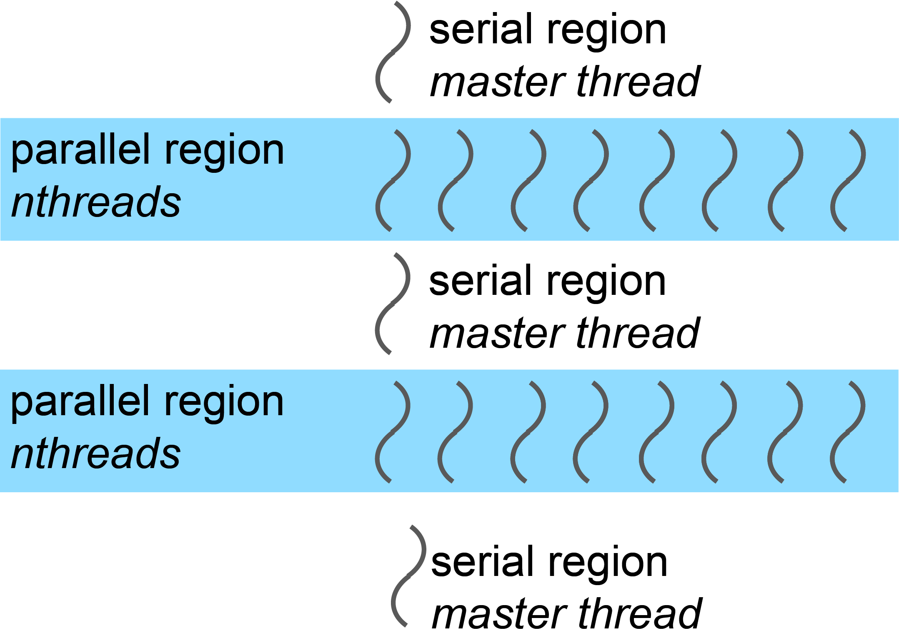
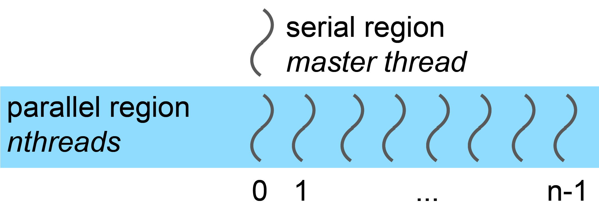

First Steps in OpenMP
Objectives
Parallel and serial regions
Master thread and teams of threads
Directives and library functions
Controlling the number of threads
Timing OpenMP codes

OpenMP Resources
Official Resources
OpenMP is trademarked by the OpenMP ARB (a not-for-profit corporation)
Website: http://openmp.org
Standard specifications (free): http://www.openmp.org/specifications/
Free Tutorials
YouTube playlist: https://www.youtube.com/playlist?list=PLLX-Q6B8xqZ8n8bwjGdzBJ25X2utwnoEG
LLNL tutorial: https://computing.llnl.gov/tutorials/openMP/
Textbooks
Using OpenMP (OpenMP 2.5)
- Authors:
B Chapman, G Jost, R van der Pas
- Publisher:
MIT Press, Cambridge, Massachusetts, 2008
Using OpenMP – The next Step (OpenMP 4.5)
- Authors:
R van der Pas, E Stolzer, C Terboven
- Publisher:
MIT Press, Cambridge, Massachusetts, 2017
Threads in OpenMP
Execution Model
Program execution follows a fork-join model:
Start: Program execution starts single-threaded (master thread)
Fork: When entering a parallel region, a team of threads is created
Parallel work: Each thread executes an independent instruction stream
Join: At the end of parallel region, threads join and synchronization occurs
Continue: Single thread continues execution
Different parallel regions can have different numbers of threads.


OpenMP: Directive Based
OpenMP is based on compiler directives that control parallel execution.
In Fortran: Directives are special comments
In C/C++: Directives are
#pragmastatementsDirectives are ignored by compilers without OpenMP support or when OpenMP is not enabled
This makes it easy to maintain a single source version for both serial and parallel execution
OpenMP also facilitates conditional compilation
OpenMP Directives in C/C++
OpenMP directives in C/C++ use the following syntax:
#pragma omp directive_name [clause ...]
Line Continuation
Use a backslash (\) for line continuation.
For example:
#pragma omp parallel \
shared(a,b)
OpenMP Directives in Fortran
Free Format
!$omp directive_name [clause ...]
Fixed Format
Directives always start in column 1:
!$omp directive_name [clause ...]
c$omp directive_name [clause ...]
*$omp directive_name [clause ...]
The first piece (e.g., !$omp) is called
the sentinel.
Line Continuation
Free format example:
!$omp parallel do &
!$omp shared(a,b)
Fixed format example:
c$omp parallel do
c$ompa shared(a,b)
c$ompb schedule(dynamic)
Note
A non-blank character in column 6 marks a continuation line.
Directive components
Directive name: Specifies the action.
Clause(s): Allow further specification.
Library Functions
In addition to directives, OpenMP offers library functions mainly to control the operating environment.
Including Headers
In C/C++:
#include <omp.h>
In Fortran:
include "omp_lib.h"
or
use omp_lib
Conditional Compilation
OpenMP compilers define the preprocessor macro _OPENMP.
C Example
#ifdef _OPENMP
#include <omp.h>
#endif
Fortran Example
Lines starting with !$ (free format) or
!$, *$, c$ (fixed format)
are only compiled if OpenMP is active:
!$ use omp_lib
Note
This guard is required if code needs to be compiled serially.
The parallel Construct
The most important construct in OpenMP.
The ``parallel`` Construct in C/C++
#pragma omp parallel
{
structured block of C instructions
}
Starts a team of threads working on the block enclosed with
{ }in parallel.At the end of the parallel region, there’s an implicit synchronization (wait for the last thread).
First Example
int main()
{
printf("3+5=%i\n", 3+5);
#pragma omp parallel
{
printf("6+7=%i\n", 6+7);
}
return 0;
}
Execution:
First portion executed on master thread (prints “3+5=” once).
Parallel construct creates threads.
Each thread performs addition and prints “6+7=”.
The ``parallel`` Construct in Fortran
!$omp parallel
structured block of Fortran
!$omp end parallel
Starts a team of threads working on the block between the directives.
At the end of the parallel region, there’s an implicit synchronization (wait for the last thread).
First Example
program example
implicit none
print *, "3+5=", 3+5
!$omp parallel
print *, "6+7=", 6+7
!$omp end parallel
end program example
Execution:
First portion executed on master thread (prints “3+5=” once).
Parallel construct creates threads.
Each thread performs addition and prints “6+7=”.
Code also compiles serially (without OpenMP).
Controlling the Number of Threads
The number of threads started by a parallel construct can be controlled in several ways (listed by increasing priority):
Environment variable
This setting applies to both C/C++ and Fortran:
export OMP_NUM_THREADS=n
Function call
omp_set_num_threads(n);
call omp_set_num_threads(n)
Clause on the parallel construct (highest priority)
#pragma omp parallel num_threads(n)!$omp parallel num_threads(n)
Thread Number and Thread ID Query Functions
The OpenMP runtime provides functions to query the number of threads and the current thread’s ID. Include the appropriate OpenMP header or module.
#include <omp.h>
/* Inside a parallel region: */
int nthreads = omp_get_num_threads();
int thread_id = omp_get_thread_num();
use omp_lib
integer :: nthreads, thread_id
! Inside a parallel region:
nthreads = omp_get_num_threads()
thread_id = omp_get_thread_num()
Thread Numbering
In a parallel region with n threads, thread IDs range from 0 to
n-1.


Example: Printing Thread Numbers
#include <stdio.h>
#include <omp.h>
int main()
{
#pragma omp parallel
{
printf("I am thread %i of %i\n",
omp_get_thread_num(),
omp_get_num_threads());
}
return 0;
}
program FortranHello
!$ use omp_lib
implicit none
!$omp parallel
print *, "I am thread", omp_get_thread_num(), &
" out of ", omp_get_num_threads()
!$omp end parallel
end program FortranHello
Sample output (8 threads):
I am thread 0 out of 8
I am thread 3 out of 8
I am thread 4 out of 8
I am thread 2 out of 8
I am thread 1 out of 8
I am thread 7 out of 8
I am thread 6 out of 8
I am thread 5 out of 8
Note
Each thread prints its thread number and the total number of threads. The order is non-deterministic.
Use Case: Task Farm Using Thread Numbers
You have three serial programs and want to run them on different threads. Convert the programs into functions/subroutines.
Original standalone program:
int main()
{
// statements
}
Example extracted function:
int funct2()
{
// statements
}
New main function:
int main()
{
omp_set_num_threads(3);
#pragma omp parallel
{
if (omp_get_thread_num() == 0) funct0();
if (omp_get_thread_num() == 1) funct1();
if (omp_get_thread_num() == 2) funct2();
}
return 0;
}
Original standalone program:
Program Prog2
! statements
End Program Prog2
Example extracted subroutine:
subroutine sub2()
! statements
End subroutine sub2
New main program:
Program farm
use omp_lib
call omp_set_num_threads(3)
!$OMP parallel
if (omp_get_thread_num() .eq. 0) call sub0()
if (omp_get_thread_num() .eq. 1) call sub1()
if (omp_get_thread_num() .eq. 2) call sub2()
!$OMP end parallel
End program farm
Timing OpenMP Code
Parallel programming is all about speed, so timing is essential.
Timer function: omp_get_wtime()
Returns elapsed wall-clock time in seconds.
Returns
doublein C anddouble precisionin Fortran.Accuracy can be queried with
omp_get_wtick().
Warning
The timer is bound to the calling thread!
double stime = omp_get_wtime();
// code segments to be timed
double ftime = omp_get_wtime() - stime;
printf("time: %f\n", ftime);
double precision :: stime, ftime
stime = omp_get_wtime()
! code segment to be timed
ftime = omp_get_wtime()
print *, "time: ", ftime - stime
Compiling OpenMP Code
Most modern compilers support OpenMP. Add a compiler flag to enable it.
Compiler flags
Compiler |
Flag |
Compiler version |
OpenMP version |
|---|---|---|---|
GNU |
|
4.8.5 |
3.1 |
GNU |
|
4.9.3 |
4.0 |
GNU |
|
5.4.0 |
4.0 |
GNU |
|
6.2.0 |
4.5 |
Intel |
|
16.0.1 |
4.0 |
Intel |
|
16.0.3 |
4.0 |
Intel |
|
17.0 |
4.5 |
Example with GCC
gcc -O3 -fopenmp -o prog_omp prog_omp.c
gfortran -O3 -fopenmp -o prog_omp prog_omp.f90
Note
Some features of newer standards may be available depending on compiler version.
Exercises (C)
The following exercises and the supplied solution are in C
Exercise
Compile and run the following hello world example on the cluster:
1// On cluster Kebnekaise
2// ml foss/2023b
3// gcc -O3 -march=native -fopenmp -o test.x 1a-hello-openmp.c -lm
4#include <stdio.h>
5
6int main()
7{
8 #pragma omp parallel num_threads(4)
9 {
10#ifdef _OPENMP
11 printf("Hello, you are using OpenMP! \n");
12#else
13 printf("Hello from serial!\n");
14#endif
15 }
16 return 0;
17}
Exercise
Query the threads’ IDs and number of threads in a parallel region.
Solution
1// On cluster Kebnekaise
2// ml foss
3// export OMP_NUM_THREADS=1
4// gcc -O3 -march=native -fopenmp -o test.x 2a-runtime-openmp.c -lm
5#include <stdio.h>
6#ifdef _OPENMP
7#include <omp.h> // This header contains the querying functions
8#endif
9
10int main()
11{
12 int threadID; // Thread ID
13 int numThreads; // Number of threads
14 #pragma omp parallel private(threadID, numThreads)
15 {
16#ifdef _OPENMP
17 threadID = omp_get_thread_num();
18 numThreads = omp_get_num_threads();
19 printf("I am thread %i of %i\n", threadID, numThreads);
20#else
21 printf("Hello from serial!\n");
22#endif
23 }
24 return 0;
25}
Summary
This guide introduced the following OpenMP concepts:
Teams of threads in OpenMP and the fork-join execution model
Controlling and querying basic properties of threads
Number of threads
Thread number/ID
Timing parallel code with
omp_get_wtime()Compiler flags for enabling OpenMP support